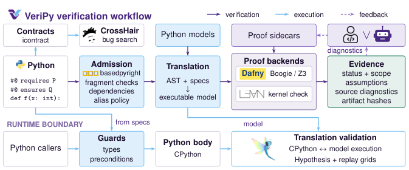

Annotated Python components are translated into Lean 4 (and Dafny) artifacts, and all 25 proof units are checked in Lean 4.33.1.
Abstract
Keeping a Python program and its formal guarantees aligned is a continuing maintenance problem. Specifications must describe the implementation that actually runs, and updates must preserve the behavior on which existing callers depend. VeriPy brings these obligations into a common workflow for annotated Python components. Developers and agents express contracts, invariants, and proof hooks as Python comments, then refine checked auxiliary lemmas using source-located diagnostics. Direct encoders produce Dafny or Lean artifacts while retaining admitted executable bodies and explicit models of their dependencies. A relational product checks whether an updated component still admits old inputs and preserves returned values and modeled exceptions. The resulting workflow connects source-level proof development with functional verification and backward compatibility, recording the assumptions under which each guarantee applies. The code is available at https://github.com/astrio-labs/veripy.
Problem
Formal guarantees about Python components drift as the code is maintained. Specifications must match the implementation that actually runs, and updates must preserve the behavior existing callers rely on.
Approach
VeriPy reads contracts, invariants, termination measures and proof hooks written as #@ comments in Python. It checks types with basedpyright and admits a supported fragment with explicit dependency models. Separate encoders emit Dafny or Lean artifacts while keeping the executable Python bodies available to native callers. A relational product program then checks backward compatibility: every input the old version admits must be admitted by the new one, with equal returned values and modeled exceptions.

Figure 2: VeriPy verification workflow. VeriPy parses Python and #@ specifications, checks types with basedpyright, and admits a supported fragment. Dafny or Lean checks the translated program and any proof sidecars supplied by a human or LLM. CrossHair searches executable contracts for violations. Guards enforce admitted input conditions. Generated guards and the generic Hypothesis harness target
Results
All 25 dual-backend proof units, drawn from seven repositories (including Django, PyTorch, Black, vLLM and CPython), verified in both Dafny 4.11.0 and Lean 4.33.1. On historical compatibility checks, some updates were proved compatible, Packaging yielded a counterexample, and several cases were inconclusive or unsupported.
Component
Py LOC
Time D / L (s)
Property
Black range composition
98
8.98 / 12.48
Exact ordered output
PyTorch shard validation
94
22.66 / 110.76
Overlap and errors
Django base36
11
5.37 / 6.84
Exact digits/errors
CPython time parser
37
12.73 / 163.59
Exact fields/errors
Selected components verified in both backends (times in seconds, Dafny / Lean)